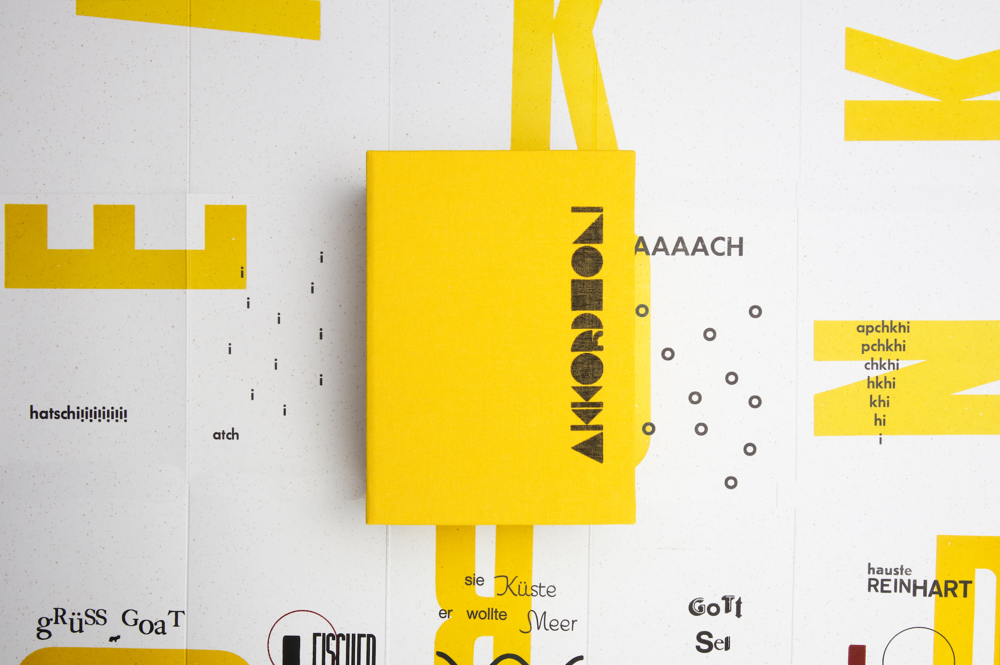
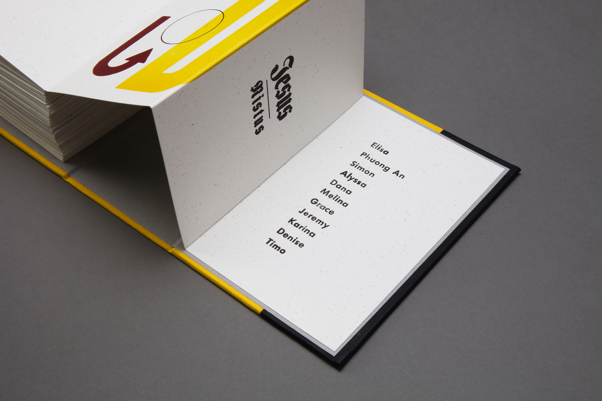
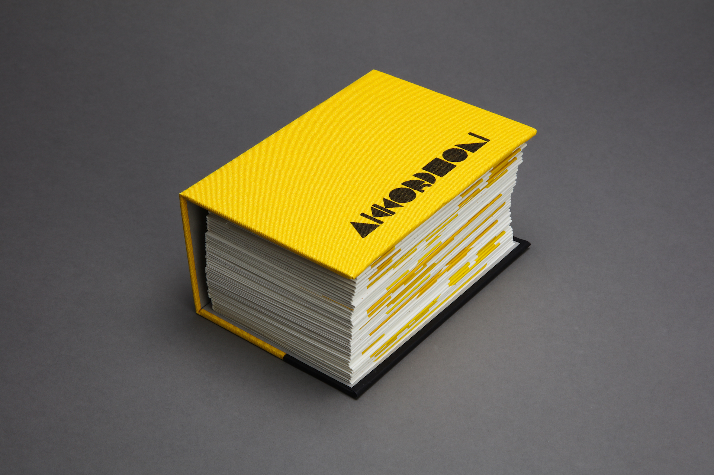
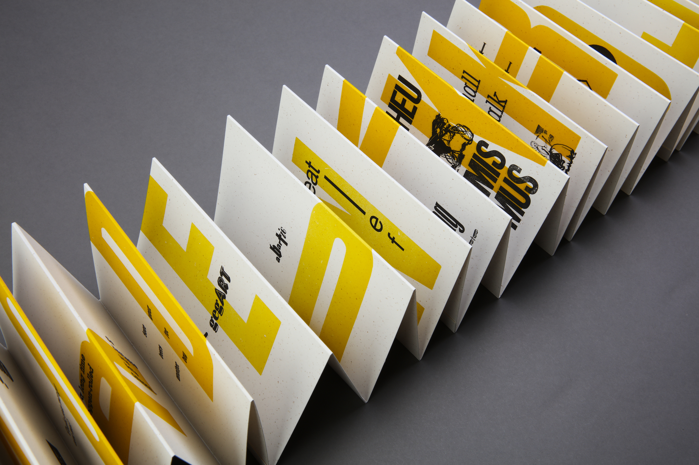
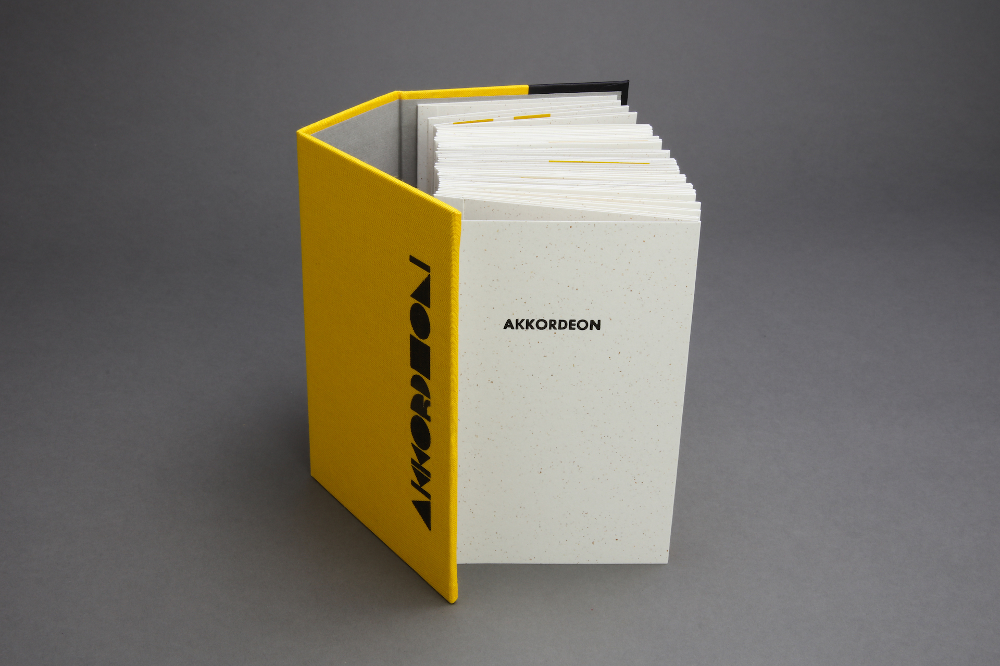
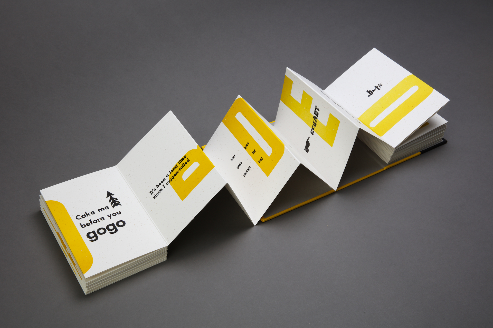
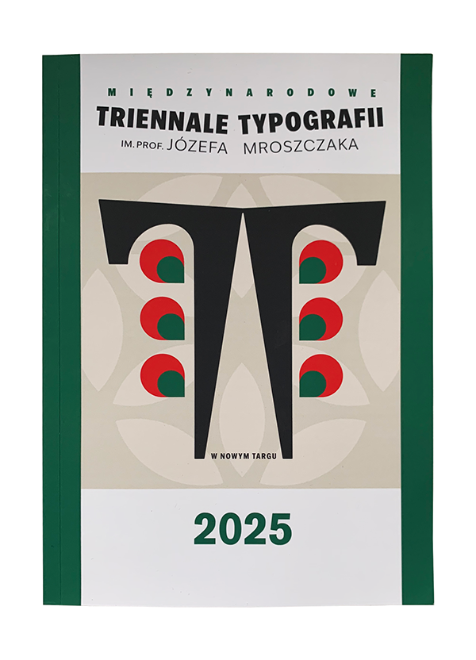
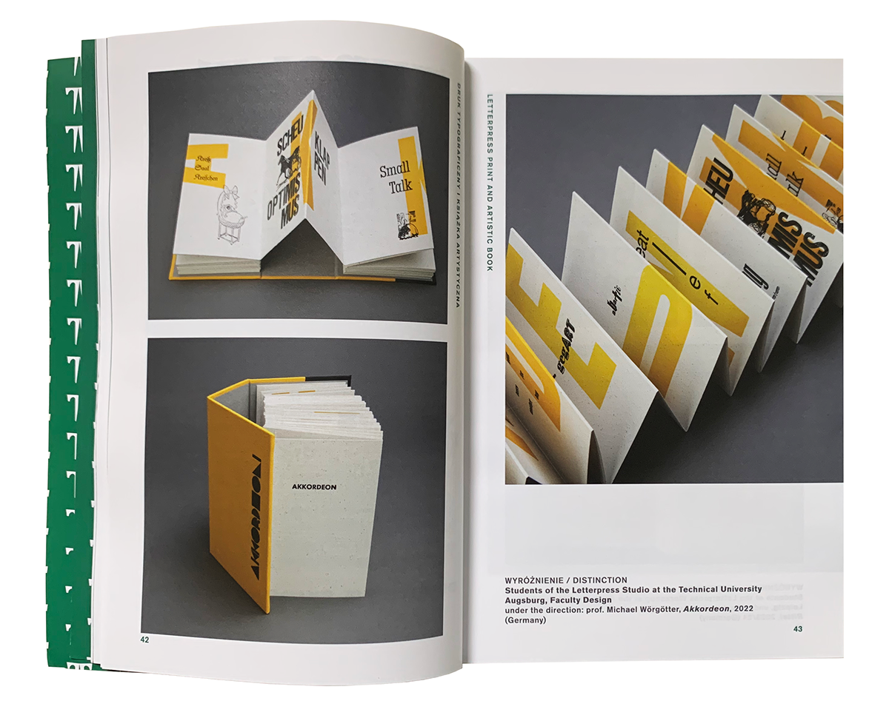

Akkordeon
Accordion entstand im Rahmen eines Semesterprojekts im Letterpress-Workshop: elf Studierende, begleitet von Prof. Michael Wörgötter, entwickelten 66 kurze Gedichte, geschrieben, von Hand gesetzt, im Buchdruck gedruckt und zu einem Leporello gebunden. Das Projekt wurde auf der Triennale of Typography 2025 in Nowy Targ, Polen, präsentiert und ausgezeichnet.







